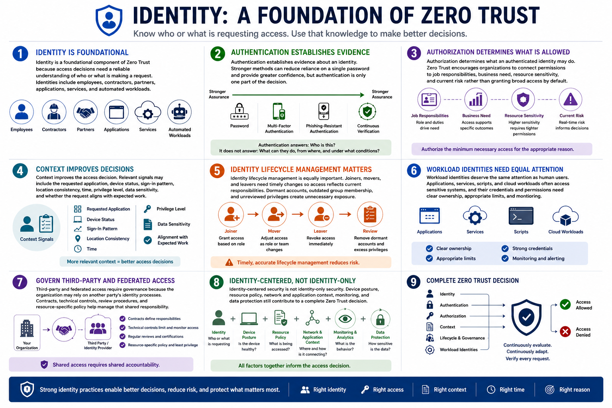

What Is Zero Trust?
Identity-Centered Security
Connecting to LMS... Progress: in progress
Version 1.0 | Date: 2026-06-16 | Educational overview of Zero Trust concepts.

Narration
Identity is a foundational component of Zero Trust because access decisions need a reliable understanding of who or what is making a request. Identities include employees, contractors, partners, applications, services, and automated workloads.
Authentication establishes evidence about an identity. Stronger methods can reduce reliance on a single password and provide greater confidence, but authentication is only one part of the decision.
Authorization determines what an authenticated identity may do. Zero Trust encourages organizations to connect permissions to job responsibilities, business need, resource sensitivity, and current risk rather than granting broad access by default.
Context improves the access decision. Relevant signals may include the requested application, device status, sign-in pattern, location consistency, time, privilege level, data sensitivity, and whether the request aligns with expected work.
Identity lifecycle management is equally important. Joiners, movers, and leavers need timely changes so access reflects current responsibilities. Dormant accounts, outdated group membership, and unreviewed privileges create unnecessary exposure.
Workload identities deserve the same attention as human users. Applications, services, scripts, and cloud workloads often access sensitive systems, and their credentials and permissions need clear ownership, appropriate limits, and monitoring.
Third-party and federated access require governance because the organization may rely on another party's identity processes. Contracts, technical controls, review procedures, and resource-specific policy help manage that shared responsibility.
Identity-centered security is not identity-only security. Device posture, resource policy, network and application context, monitoring, and data protection still contribute to a complete Zero Trust decision.